df15_1 <- data.frame(
cho = c(5.68,3.79,6.02,4.85,4.60,6.05,4.90,7.08,3.85,4.65,4.59,4.29,7.97,
6.19,6.13,5.71,6.40,6.06,5.09,6.13,5.78,5.43,6.50,7.98,11.54,5.84,
3.84),
tg = c(1.90,1.64,3.56,1.07,2.32,0.64,8.50,3.00,2.11,0.63,1.97,1.97,1.93,
1.18,2.06,1.78,2.40,3.67,1.03,1.71,3.36,1.13,6.21,7.92,10.89,0.92,
1.20),
ri = c(4.53, 7.32,6.95,5.88,4.05,1.42,12.60,6.75,16.28,6.59,3.61,6.61,7.57,
1.42,10.35,8.53,4.53,12.79,2.53,5.28,2.96,4.31,3.47,3.37,1.20,8.61,
6.45),
hba = c(8.2,6.9,10.8,8.3,7.5,13.6,8.5,11.5,7.9,7.1,8.7,7.8,9.9,6.9,10.5,8.0,
10.3,7.1,8.9,9.9,8.0,11.3,12.3,9.8,10.5,6.4,9.6),
fpg = c(11.2,8.8,12.3,11.6,13.4,18.3,11.1,12.1,9.6,8.4,9.3,10.6,8.4,9.6,10.9,
10.1,14.8,9.1,10.8,10.2,13.6,14.9,16.0,13.2,20.0,13.3,10.4)
)
str(df15_1)
## 'data.frame': 27 obs. of 5 variables:
## $ cho: num 5.68 3.79 6.02 4.85 4.6 6.05 4.9 7.08 3.85 4.65 ...
## $ tg : num 1.9 1.64 3.56 1.07 2.32 0.64 8.5 3 2.11 0.63 ...
## $ ri : num 4.53 7.32 6.95 5.88 4.05 ...
## $ hba: num 8.2 6.9 10.8 8.3 7.5 13.6 8.5 11.5 7.9 7.1 ...
## $ fpg: num 11.2 8.8 12.3 11.6 13.4 18.3 11.1 12.1 9.6 8.4 ...
head(df15_1)
## cho tg ri hba fpg
## 1 5.68 1.90 4.53 8.2 11.2
## 2 3.79 1.64 7.32 6.9 8.8
## 3 6.02 3.56 6.95 10.8 12.3
## 4 4.85 1.07 5.88 8.3 11.6
## 5 4.60 2.32 4.05 7.5 13.4
## 6 6.05 0.64 1.42 13.6 18.320 多元线性回归
医学研究中许多疾病都有多种原因，而且预后也是由多种因素决定的。如糖尿病患者的血糖变化可能受胰岛素、糖化血红蛋白、血清总胆固醇、甘油三酯等多种生化指标的影响。即使对那些已知是由单一病原体导致的感染性疾病，也有许多因素影响是否发病，如遗传特征、感染途径及程度、自身免疫能力等。由于各因素间往往相互联系，多变量回归分析可以帮助我们分析变量间的数量依存关系，以及它们对结果变量的相对作用大小。多元线性回归（multiple linear regression），用于分析一个因变量与多个自变量之间的线性关系。
20.1 数据和建模
使用孙振球《医学统计学》第4版例15-1的数据，探索不同因素对空腹血糖的影响，数据录入如下：
数据一共5列，第1列是总胆固醇，第2列是甘油三酯，第3列是胰岛素，第4列是糖化血红蛋白，第5列是空腹血糖（因变量）。
在建立回归方程前，先简单探索下数据：
library(GGally)
## Warning: package 'ggplot2' was built under R version 4.5.3
ggpairs(df15_1) + theme_bw()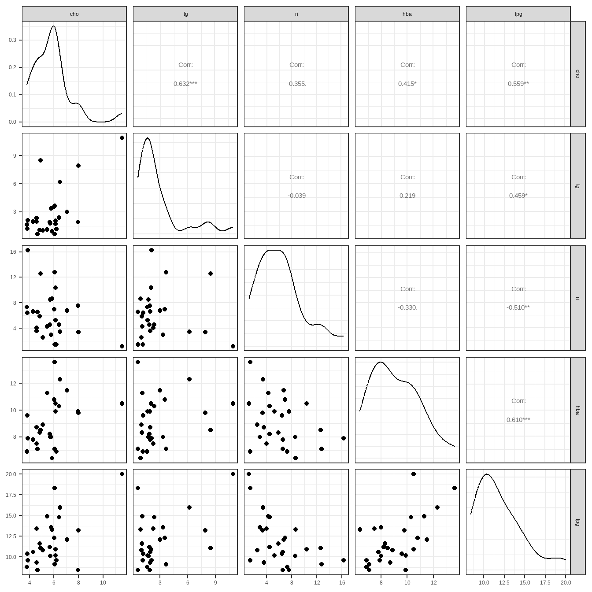
从这幅图来看，血糖和糖化血红蛋白相关性最大，和甘油三酯关系最小。
接下来建立回归方程：
f <- lm(fpg ~ cho + tg + ri + hba, data = df15_1)
summary(f)
##
## Call:
## lm(formula = fpg ~ cho + tg + ri + hba, data = df15_1)
##
## Residuals:
## Min 1Q Median 3Q Max
## -3.6268 -1.2004 -0.2276 1.5389 4.4467
##
## Coefficients:
## Estimate Std. Error t value Pr(>|t|)
## (Intercept) 5.9433 2.8286 2.101 0.0473 *
## cho 0.1424 0.3657 0.390 0.7006
## tg 0.3515 0.2042 1.721 0.0993 .
## ri -0.2706 0.1214 -2.229 0.0363 *
## hba 0.6382 0.2433 2.623 0.0155 *
## ---
## Signif. codes: 0 '***' 0.001 '**' 0.01 '*' 0.05 '.' 0.1 ' ' 1
##
## Residual standard error: 2.01 on 22 degrees of freedom
## Multiple R-squared: 0.6008, Adjusted R-squared: 0.5282
## F-statistic: 8.278 on 4 and 22 DF, p-value: 0.0003121这个结果信息很丰富，Coefficients部分给出了：
- 截距和各自变量的回归系数（
Estimate）、标准误（Std. Error）、t值（t value）、P值（Pr(>|t|)）， - 最下方给出了决定系数R2（
Multiple R-squared）、调整后的R2（Adjusted R-squared）， - F值（
F-statistic），总体方程的P值（p-value: 0.0003121）。
20.2 假设检验
上述结果直接给出了各种假设检验的结果。
首先是回归方程的假设检验，使用方差分析法得出的F值=8.278，p-value=0.0003121，可以认为该回归方程具有统计学意义。
决定系数R2=0.6008，表明血糖含量变异的60%可由总胆固醇、甘油三酯、胰岛素和糖化血红蛋白的变化来解释。
复相关系数R=根号下R2：
# 计算复相关系数
sqrt(0.6008)
## [1] 0.7751129如果只有一个自变量时R=|r|，r为简单相关系数。
然后是各自变量的假设检验与评价。上述结果中给出的是t检验法的结果：直接看Coefficients中各自变量的t值（t value）和P值（Pr(>|t|)）即可。
20.3 自变量选择方法
前面讨论的多元线性回归方程中所包括的自变量是研究者根据专业知识和经验事先选择好的。然而在许多回归分析的应用中，由于没有清晰的理论依据，回归模型所包含的自变量难以预先确定，如果将一些不重要的自变量也引入方程，会降低模型的精度，因此选择有意义的自变量常常是回归分析的第一步。
选择自变量的方法有多种，其基本思路是尽可能将回归效果显著的自变量选入回归方程中，而将作用不显著的自变量排除在外。
20.3.1 全局择优法
全局择优法是对自变量各种不同组合所建立的回归方程进行比较，进而从全部组合中挑出一个“最优”的回归方程。借助leaps包实现，使用起来其实就是1行代码而已：
library(leaps)
leaps <- regsubsets(fpg ~ cho + tg + ri + hba, data = df15_1)
summary(leaps)
## Subset selection object
## Call: regsubsets.formula(fpg ~ cho + tg + ri + hba, data = df15_1)
## 4 Variables (and intercept)
## Forced in Forced out
## cho FALSE FALSE
## tg FALSE FALSE
## ri FALSE FALSE
## hba FALSE FALSE
## 1 subsets of each size up to 4
## Selection Algorithm: exhaustive
## cho tg ri hba
## 1 ( 1 ) " " " " " " "*"
## 2 ( 1 ) "*" " " " " "*"
## 3 ( 1 ) " " "*" "*" "*"
## 4 ( 1 ) "*" "*" "*" "*"
#plot(leaps, scale = "Cp") # 通过Cp判断*表示变量被包含在模型中，这个结果看起来并不是很直观，下面会结合图进行解释。
我们首先查看rss(Residual sum of squares，残差平方和)最小的结果，因为RSS越小说明模型拟合结果越好：
which.min(summary(leaps)$rss)
## [1] 4结果表明有4个自变量的模型具有最小的RSS，这是很明显的哈，因为这个数据最多就有4个自变量。。。
增加特征数量必然会减少RSS！而且必然会增加R方。我们即使添加一个完全不相关的特征，比如：洛杉矶湖人队的胜场数，模型的RSS也会减少，R方也会增加。
所以只看RSS并不能帮助我们很好的选择变量。
我们这里讨论4种用于自变量选择的统计方法：
- 赤池信息量准则
- 马洛斯的Cp
- 贝叶斯准则
- 调整的R方
赤池信息量准则(Akaike information criterion，AIC)，是评估统计模型的复杂度和衡量统计模型”拟合优度”（Goodness of Fit）的一种标准，是由日本统计学家赤池弘次创立和发展的。赤池信息量准则的方法是寻找可以最好地解释数据但包含最少自由参数的模型。
AIC的计算方法如下，其中p是模型中的特征数量(也就是自变量数量)，n是样本大小：
\[ \mathrm{AIC}=n*\log\Bigg(\frac{\mathrm{RSS}_p}{n}\Bigg)+2*p \]
贝叶斯信息量准则(Bayesian information criterion，BIC)和AIC类似，只不过BIC比AIC的惩罚力度更大。
BIC的计算方法如下，BIC的前半部分计算和AIC是完全一样的：
\[ \mathrm{BIC}=n*\log\left(\frac{\mathrm{RSS}_p}n\right)+p*\log(n) \]
AIC和BIC的不同点：
BIC的惩罚项比AIC大，考虑了样本个数，样本数量多，可以防止模型精度过高造成的模型复杂度过高。 AIC和BIC前半部分是一样的，BIC考虑了样本数量，样本数量过多时，可有效防止模型精度过高造成的模型复杂度过高。
马洛斯的Cp(Mallows’Cp)与AIC的计算也是类似，其计算公式如下，其中MSE(mean-square error, MSE)是均方误差：
\[ \mathrm{CP}=\frac{\mathrm{RSS}_{p}}{\mathrm{MSE}_{f}}-n+2*p \]
调整的R2(修正R方)的计算公式如下：
\[ \text{修正R方}=1-\left(\frac{\mathrm{RSS}}{n-p-1}\right)/\left(\frac{\mathrm{R}\text{方}}{ n - 1 }\right) \]
前三种方法的目标是追求统计量的值最小化，调整的R方的目标是追求统计量的值最大化。这些统计方法的目的是建立一个尽可能简约的模型，换句话说，要对模型复杂性进行”惩罚”。
在线性模型中，AIC和Cp成正比，所以我们只需关注Cp即可。
下面以CP为纵坐标进行可视化：
par(mfrow=c(1,2))
plot(summary(leaps)$cp,type = "l",xlab = "number of features",ylab = "cp")
plot(leaps, scale = "Cp") # 通过Cp判断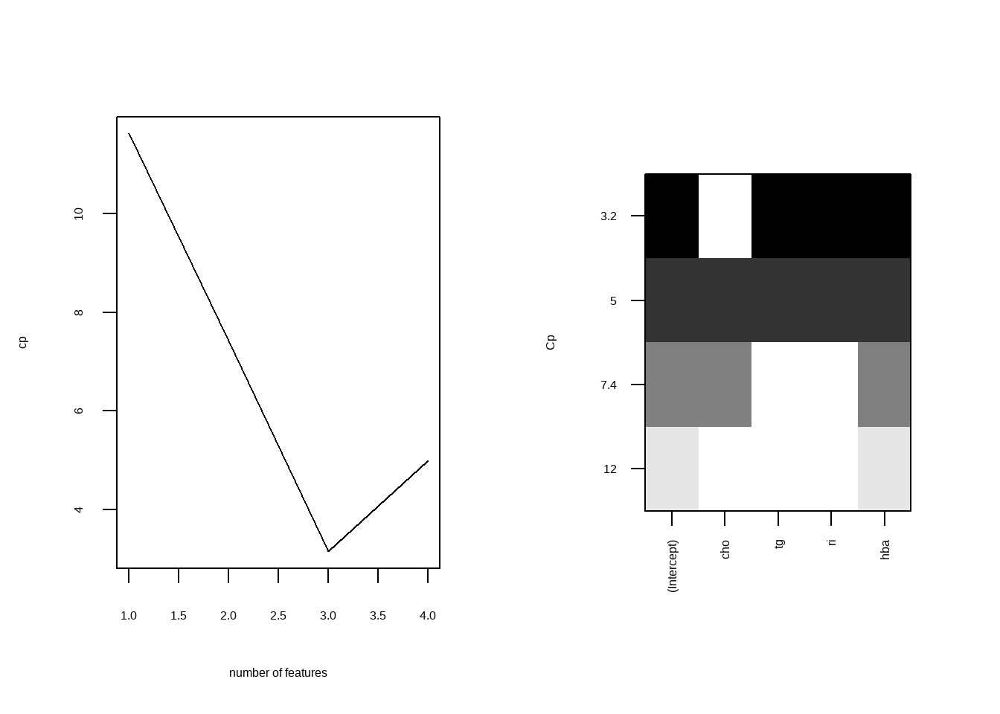
左图横坐标是自变量数量，纵坐标是CP值大小，可以看到在变量数量为3时，CP是最小的；右边的图也是一样的意思，先看纵坐标，CP最小是3.2，此时对应的黑色块是tg,ri,hba这3个变量（截距也是黑色的）。
也可以用其他指标作为纵坐标进行可视化，比如调整的R方adjr2:
plot(leaps, scale = "adjr2")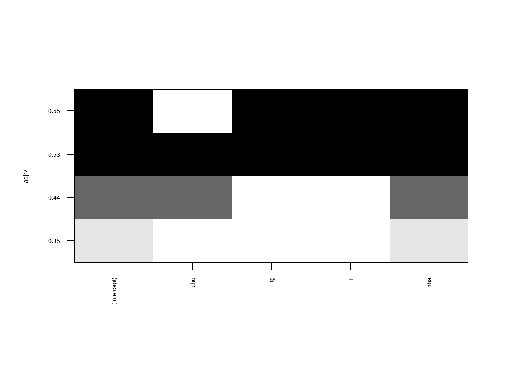
或者BIC，BIC和AIC意思是一样的：
plot(leaps, scale = "bic")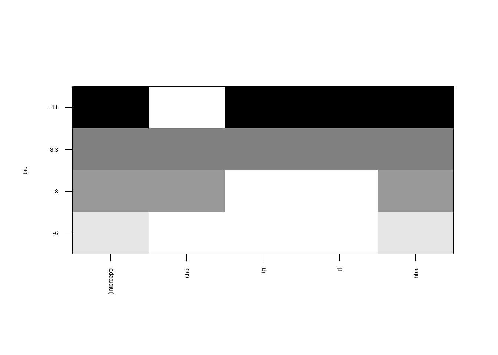
可以看到3种方法得到的结果都是一样的，都是选出了tg,ri,hba这3个变量，但有时结果也是不太一样的，不用纠结。
上面是比较传统的方法，但是说实话得到的图不是很好看，如果没有教程完全不知道如何解读，非常的不优雅。
神包broom可以用于这个筛选结果，结果会返回一个tibble，看起来非常清稀易懂：
broom::tidy(leaps)
## # A tibble: 4 × 9
## `(Intercept)` cho tg ri hba r.squared adj.r.squared BIC
## <lgl> <lgl> <lgl> <lgl> <lgl> <dbl> <dbl> <dbl>
## 1 TRUE FALSE FALSE FALSE TRUE 0.372 0.347 -5.95
## 2 TRUE TRUE FALSE FALSE TRUE 0.484 0.441 -7.99
## 3 TRUE FALSE TRUE TRUE TRUE 0.598 0.546 -11.4
## 4 TRUE TRUE TRUE TRUE TRUE 0.601 0.528 -8.32
## # ℹ 1 more variable: mallows_cp <dbl>可以看到如果是根据R方来选择，则R方最大时4个变量都在，如果是根据BIC最小选择，那结果是tg,ri,hba这3个变量入选。这样我们不用画图也可以很直观的看出在不同指标下应该选择哪几个变量。
如果还想更加炫酷一点，可以把这个结果变成一个图表（参考文章）：
library(gt)
library(tidyverse)
library(scales)
broom::tidy(leaps) %>%
select(-`(Intercept)`) %>%
rownames_to_column(var = "n_vars") %>%
gt(rowname_col = "n_vars") %>%
gt::data_color(
columns = cho:hba,
fn = col_numeric(
palette = c("#fdae61", "#abdda4"),
domain = c(0, 1))
) %>%
gt::fmt_number(r.squared:mallows_cp, n_sigfig = 4)| cho | tg | ri | hba | r.squared | adj.r.squared | BIC | mallows_cp | |
|---|---|---|---|---|---|---|---|---|
| 1 | FALSE | FALSE | FALSE | TRUE | 0.3717 | 0.3465 | −5.955 | 11.63 |
| 2 | TRUE | FALSE | FALSE | TRUE | 0.4843 | 0.4414 | −7.995 | 7.419 |
| 3 | FALSE | TRUE | TRUE | TRUE | 0.5981 | 0.5456 | −11.43 | 3.152 |
| 4 | TRUE | TRUE | TRUE | TRUE | 0.6008 | 0.5282 | −8.315 | 5.000 |
这样一来更加直观了，这里我用绿色表示留下的变量，黄色表示被剔除的变量，后面几列是对应的各种指标。
做到这一步的时候，我真的觉得R语言太牛逼了，大神的可视化思路太强了，我差的太远了。
如果只是想要看一下不同指标下保留的变量个数，我们可以根据上面的结果用ggplot2画图。
broom::tidy(leaps) %>%
select(r.squared:mallows_cp) %>%
mutate(n_vars = 1:n()) %>%
pivot_longer(cols = -n_vars, names_to = "metric") %>%
ggplot(aes(x = n_vars, y = value)) +
geom_point(size = 2) +
geom_line(linewidth = 1) +
geom_vline(
data = . %>%
group_by(metric) %>%
filter(value == ifelse(str_detect(metric, "r.squared"),
max(value), min(value))),
aes(xintercept = n_vars), lty = 2) +
theme_bw()+
facet_wrap(~ metric, scales = "free_y")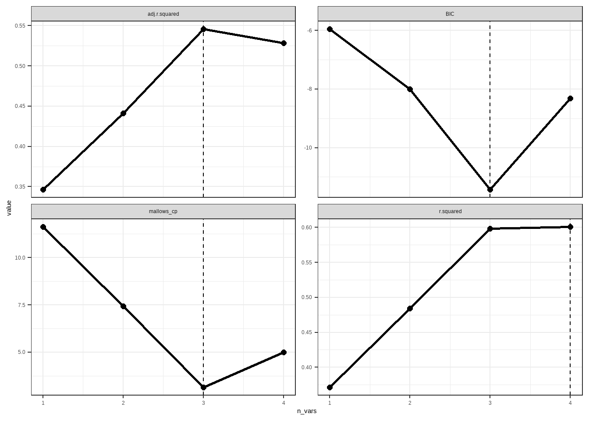
强大！牛B！专业！
20.3.2 逐步选择法
全局择优法建立的最优回归方程用于估计与预测的效果最好。但当自变量数目较大时，采用全局择优方法的计算量很大，另外，用全局择优法建立的回归方程，不能保证回归方程内的各自变量都有统计学意义。
逐步选择法可以克服这一不足，是实际应用中普遍使用的一类方法，该法按照选入变量的顺序不同分为前进法（forward selection）、后退法（backward elimination）和逐步回归法（stepwise regression）。它们的共同特点是每一步只引入或剔除一个自变量。
在R语言中可以通过MASS包实现逐步选择法。
- 向前选择 (Forward)：从空模型开始，每次添加一个最能降低AIC的变量。
- 向后剔除 (Backward)：从全模型开始，每次删除一个对AIC贡献最小（或导致AIC增加最少）的变量。
- 双向逐步 (Both/Stepwise)：结合上述两者，每一步既考虑添加新变量，也考虑删除已存在的变量（最常用）。
向后回归法，只进行了2次，最小AIC=40.34，此时选中的变量是tg、ri、hba：
library(MASS)
stepAIC(f, direction = "backward")
## Start: AIC=42.16
## fpg ~ cho + tg + ri + hba
##
## Df Sum of Sq RSS AIC
## - cho 1 0.6129 89.454 40.343
## <none> 88.841 42.157
## - tg 1 11.9627 100.804 43.568
## - ri 1 20.0635 108.905 45.655
## - hba 1 27.7939 116.635 47.507
##
## Step: AIC=40.34
## fpg ~ tg + ri + hba
##
## Df Sum of Sq RSS AIC
## <none> 89.454 40.343
## - ri 1 25.690 115.144 45.159
## - tg 1 26.530 115.984 45.356
## - hba 1 32.269 121.723 46.660
##
## Call:
## lm(formula = fpg ~ tg + ri + hba, data = df15_1)
##
## Coefficients:
## (Intercept) tg ri hba
## 6.4996 0.4023 -0.2870 0.6632向前回归，只进行了1次，所有变量都要：
stepAIC(f, direction = "forward")
## Start: AIC=42.16
## fpg ~ cho + tg + ri + hba
##
## Call:
## lm(formula = fpg ~ cho + tg + ri + hba, data = df15_1)
##
## Coefficients:
## (Intercept) cho tg ri hba
## 5.9433 0.1424 0.3515 -0.2706 0.6382逐步回归，也是进行了2次，此时AIC=40.34，选中的变量为tg、ri、hba：
stepAIC(f, direction = "both")
## Start: AIC=42.16
## fpg ~ cho + tg + ri + hba
##
## Df Sum of Sq RSS AIC
## - cho 1 0.6129 89.454 40.343
## <none> 88.841 42.157
## - tg 1 11.9627 100.804 43.568
## - ri 1 20.0635 108.905 45.655
## - hba 1 27.7939 116.635 47.507
##
## Step: AIC=40.34
## fpg ~ tg + ri + hba
##
## Df Sum of Sq RSS AIC
## <none> 89.454 40.343
## + cho 1 0.613 88.841 42.157
## - ri 1 25.690 115.144 45.159
## - tg 1 26.530 115.984 45.356
## - hba 1 32.269 121.723 46.660
##
## Call:
## lm(formula = fpg ~ tg + ri + hba, data = df15_1)
##
## Coefficients:
## (Intercept) tg ri hba
## 6.4996 0.4023 -0.2870 0.6632通过以上结果，我们选择tg、ri、hba这3个变量，然后使用它们重新建立回归方程：
f1 <- lm(fpg ~ tg + ri + hba, data = df15_1)
summary(f1)
##
## Call:
## lm(formula = fpg ~ tg + ri + hba, data = df15_1)
##
## Residuals:
## Min 1Q Median 3Q Max
## -3.2692 -1.2305 -0.2023 1.4886 4.6570
##
## Coefficients:
## Estimate Std. Error t value Pr(>|t|)
## (Intercept) 6.4996 2.3962 2.713 0.01242 *
## tg 0.4023 0.1541 2.612 0.01559 *
## ri -0.2870 0.1117 -2.570 0.01712 *
## hba 0.6632 0.2303 2.880 0.00845 **
## ---
## Signif. codes: 0 '***' 0.001 '**' 0.01 '*' 0.05 '.' 0.1 ' ' 1
##
## Residual standard error: 1.972 on 23 degrees of freedom
## Multiple R-squared: 0.5981, Adjusted R-squared: 0.5456
## F-statistic: 11.41 on 3 and 23 DF, p-value: 8.793e-05根据这个结果得到的“最优”回归方程为：
\[ \hat{Y}=6.4996+0.4023X_2-0.2870X_3+0.6632X_4 \]
结果表明：血糖的变化与甘油三酯、胰岛素和糖化血红蛋白有线性回归关系，其中与胰岛素负相关。由回归系数看出，糖化血红蛋白对空腹血糖的影响最大。
以上是两种自变量选择的方法，介绍的较为简单，更加详细的介绍请参考R语言实战临床预测模型中的变量选择合集，其中详细介绍了多种方法，如：
- 逐步回归法
- 最优子集法
- 先单后多法
- ……
以下是其他补充内容。
20.4 模型评价
回归模型可以通过R2、AIC、BIC、RMSE等评价，R2范围在0~1之间，越接近1说明结果越好。AIC、BIC、RMSE是越小越好。
performance包可以很方便的计算这些指标：
library(performance)
## Warning: package 'performance' was built under R version 4.5.2
r2(f)
## # R2 for Linear Regression
## R2: 0.601
## adj. R2: 0.528
AIC(f)
## [1] 120.78
BIC(f)
## [1] 128.5551
rmse(f)
## [1] 1.81395或者直接输出所有结果：
model_performance(f)
## # Indices of model performance
##
## AIC | AICc | BIC | R2 | R2 (adj.) | RMSE | Sigma
## ---------------------------------------------------------
## 120.8 | 125.0 | 128.6 | 0.601 | 0.528 | 1.814 | 2.01020.5 回归诊断
判断数据是否满足多元线性回归的条件，也就是4个条件：
- 正态性
- 独立性
- 等方差性
- 线性
20.5.1 看图判断
opar <- par(mfrow = c(2,2))
plot(f)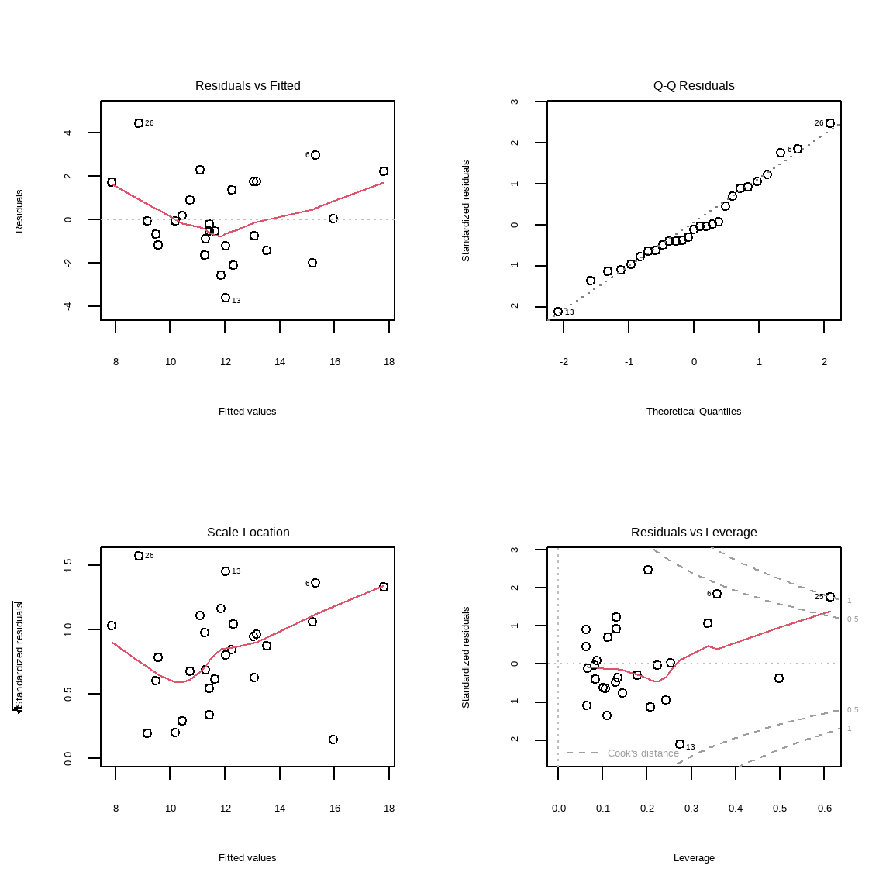
par(opar)- 第1幅图（左上）是残差拟合图，展示真实残差和拟合残差的关系，判读是否满足线性这个条件，如果满足，则应该为一条直线，但是本图明显是一条曲线，说明不是很满足线性这个条件，可能需要加二次项。
- 第2幅图（右上）是正态Q-Q图，判断是否满足正态性这个条件，通过这个图来看，基本满足。
- 第3幅图（左下）是位置尺度图，判读是否满足同方差性，如果满足，水平线两侧的点应该随机分布，从此图来看基本满足。
- 第4幅图（右下）是残差杠杆图，用于识别离群点等。
上面是比较原始的方法，下面介绍一个非常现代化的R包，用于实现以上图形：
library(performance)# # 4.0以后版本的ggplot2显示不出来
check_model(f)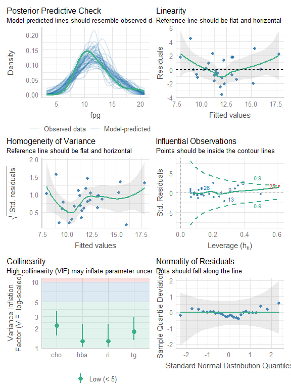
是不是更加好看了呢？
这几个图也可以单独画出来，使用以下代码即可：
diagnostic_plots <- plot(check_model(f, panel = FALSE))首先看第一个图。这个图是基于check_predictions()函数的，属于事后检验，是检查真实数据和模型数据的拟合情况的。下图中绿色粗线是真实的预测变量的分布情况，蓝色线条表示模拟的分布，理想的情况应该是完全重合的。从下图来看，其实是有些问题的，这说明我们用的模型可能不太合适。
diagnostic_plots[[1]]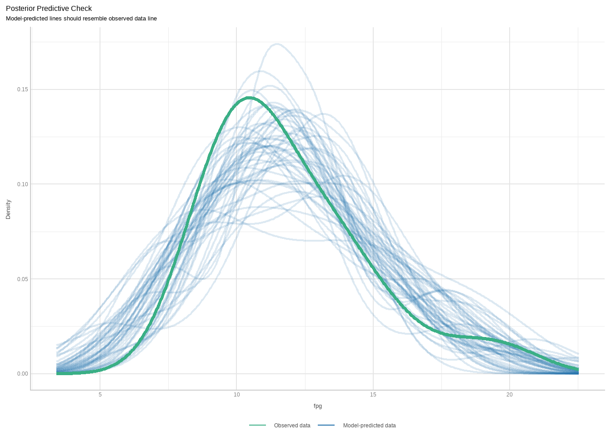
下面看第2张图。这张图是检查预测变量和结果变量是否符合线性关系的。合理的情况是残差完全随机地分布在参考线两侧。从这张图来看我们的数据其实不太完美。
diagnostic_plots[[2]]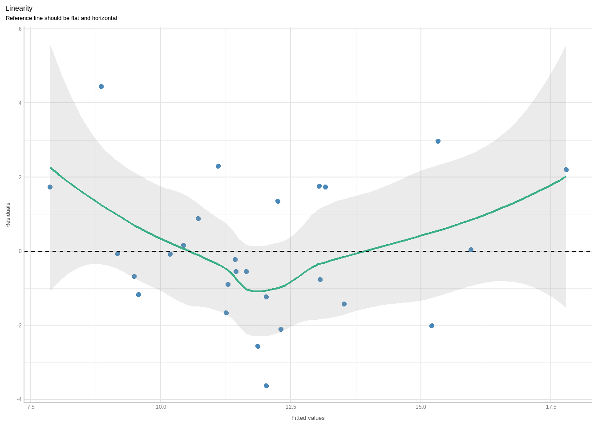
下面是第3幅图，是用来检查方差齐性的，同上面介绍过的位置尺度图。
diagnostic_plots[[3]]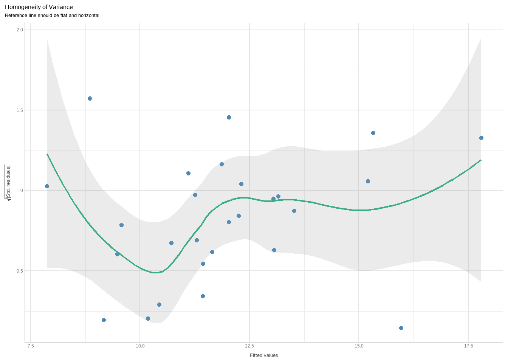
第4幅图是用来观察强影响点或者离群值、异常值的。使用的是库克距离（cook’s-distance）来计算的，图中在虚线（库克距离）外的点可被认为是异常值。
diagnostic_plots[[4]]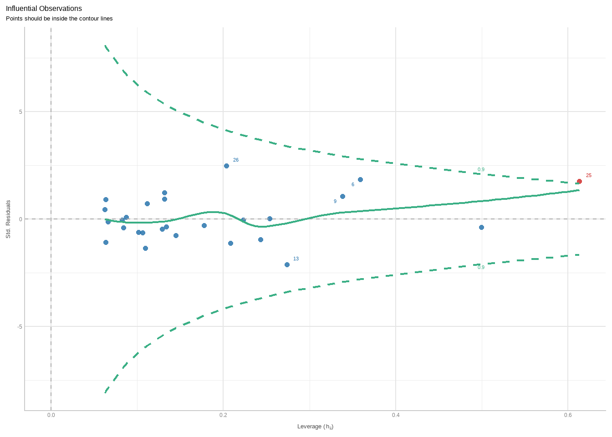
第5幅图是关于多重共线性的。是通过方差膨胀因子来评价的，下图中展示了4个变量的VIF，基本都在3以下，可认为不存在多重共线性：
diagnostic_plots[[5]]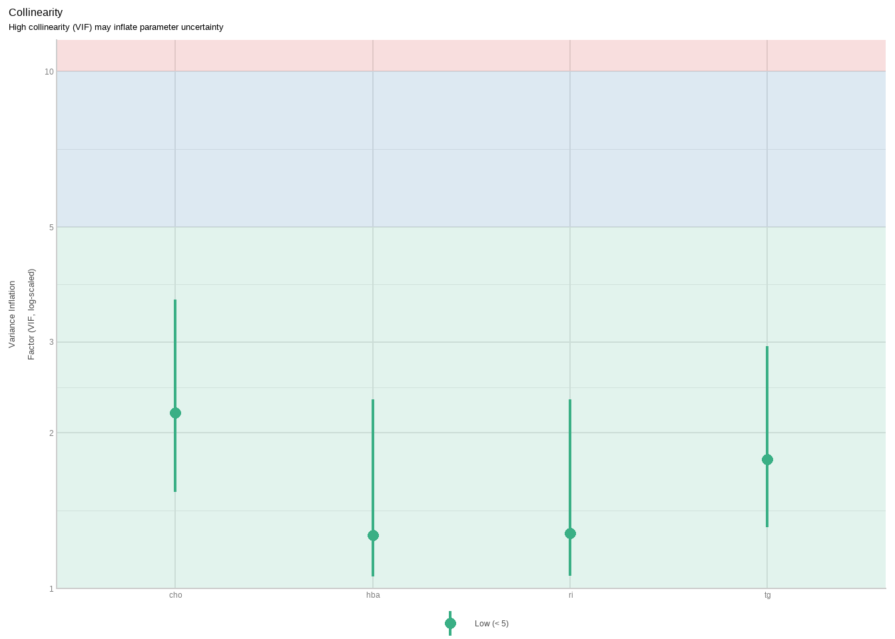
第6幅图是看正态性的。理想情况下数据点应该均匀的分布在横线上，最好是和横线重合，尤其是尾部，我们这个数据还算可以。
# 4.0以后版本的ggplot2会报错
diagnostic_plots[[6]]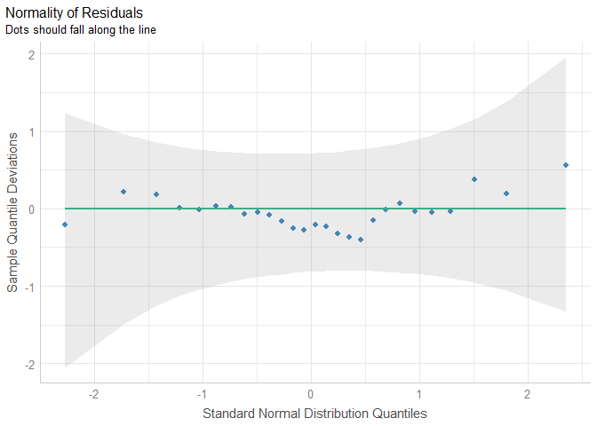
20.5.2 统计方法验证
也可以通过统计方法判断，比如gvlma包可以实现对线性模型的综合判断：
library(gvlma)
gvmodel<-gvlma(f)
summary(gvmodel)
##
## Call:
## lm(formula = fpg ~ cho + tg + ri + hba, data = df15_1)
##
## Residuals:
## Min 1Q Median 3Q Max
## -3.6268 -1.2004 -0.2276 1.5389 4.4467
##
## Coefficients:
## Estimate Std. Error t value Pr(>|t|)
## (Intercept) 5.9433 2.8286 2.101 0.0473 *
## cho 0.1424 0.3657 0.390 0.7006
## tg 0.3515 0.2042 1.721 0.0993 .
## ri -0.2706 0.1214 -2.229 0.0363 *
## hba 0.6382 0.2433 2.623 0.0155 *
## ---
## Signif. codes: 0 '***' 0.001 '**' 0.01 '*' 0.05 '.' 0.1 ' ' 1
##
## Residual standard error: 2.01 on 22 degrees of freedom
## Multiple R-squared: 0.6008, Adjusted R-squared: 0.5282
## F-statistic: 8.278 on 4 and 22 DF, p-value: 0.0003121
##
##
## ASSESSMENT OF THE LINEAR MODEL ASSUMPTIONS
## USING THE GLOBAL TEST ON 4 DEGREES-OF-FREEDOM:
## Level of Significance = 0.05
##
## Call:
## gvlma(x = f)
##
## Value p-value Decision
## Global Stat 9.68910 0.046003 Assumptions NOT satisfied!
## Skewness 0.65344 0.418886 Assumptions acceptable.
## Kurtosis 0.04015 0.841193 Assumptions acceptable.
## Link Function 7.68064 0.005582 Assumptions NOT satisfied!
## Heteroscedasticity 1.31487 0.251515 Assumptions acceptable.- 全局统计量：粗略估计结果变量和预测变量是否符合线性关系，结果是不符合
- 偏度和峰度：检验残差分布，结果是符合
- 连接函数：检测结果变量是连续型还是二分类，结果是不符合
- 异方差：检验方差齐性，结果是符合
以上是多个条件一起输出判断，也可以针对单独的条件进行判断。
首先看下正态性的判断。
library(car)
# 验证正态性
qqPlot(f,labels = row.names(df15_1), id.method = "identify",simulate = T,
main = "Q-Q plot") 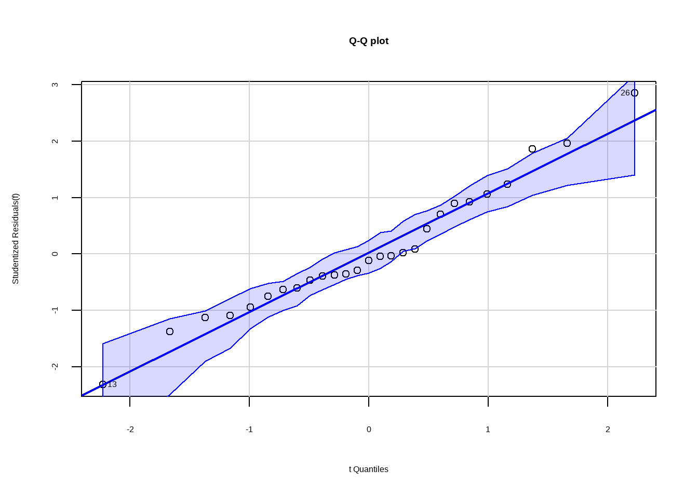
## [1] 13 26从图中可看出正态性基本满足。
当然也可以使用非常好用的performance包实现：
check_normality(f)
## OK: residuals appear as normally distributed (p = 0.671).检测离群值，基于cook距离：
check_outliers(f)
## 1 outlier detected: case 25.
## - Based on the following method and threshold: cook (0.9).
## - For variable: (Whole model).检测残差（或者因变量）独立性：
set.seed(123)
check_autocorrelation(f)
## OK: Residuals appear to be independent and not autocorrelated (p = 0.296).或者通过car包：
set.seed(123)
# 验证因变量独立性
durbinWatsonTest(f)
## lag Autocorrelation D-W Statistic p-value
## 1 0.1778885 1.634654 0.296
## Alternative hypothesis: rho != 0P值大于0.05，满足条件。
# 验证线性
crPlots(f)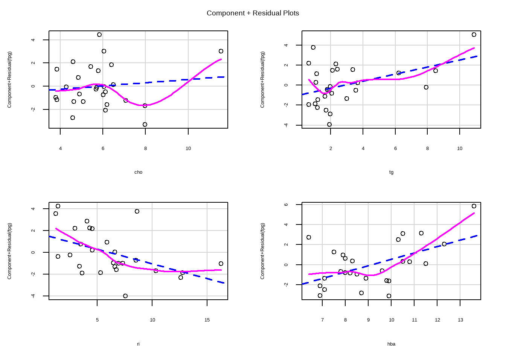
通过观察成分残差图，线性基本满足。
下面是检测方差齐性：
# 验证方差齐性
ncvTest(f)
## Non-constant Variance Score Test
## Variance formula: ~ fitted.values
## Chisquare = 0.0004274839, Df = 1, p = 0.9835P值大于0.05，方差齐性满足。
方差齐性检验也可以通过performance包实现：
# performance检测方差齐性
check_heteroscedasticity(f)
## OK: Error variance appears to be homoscedastic (p = 0.984).20.5.3 多重共线性的检验
下面是多重共线性的检验，通过计算方差膨胀因子检验。
vif(f)
## cho tg ri hba
## 2.185539 1.779862 1.278364 1.266730
vif(f)>4
## cho tg ri hba
## FALSE FALSE FALSE FALSE都小于4（标准有争议），基本不存在多重共线性。
或者通过performance实现：
check_collinearity(f)
## # Check for Multicollinearity
##
## Low Correlation
##
## Term VIF VIF 95% CI adj. VIF Tolerance Tolerance 95% CI
## cho 2.19 [1.54, 3.62] 1.48 0.46 [0.28, 0.65]
## tg 1.78 [1.31, 2.95] 1.33 0.56 [0.34, 0.76]
## ri 1.28 [1.06, 2.32] 1.13 0.78 [0.43, 0.94]
## hba 1.27 [1.05, 2.32] 1.13 0.79 [0.43, 0.95]